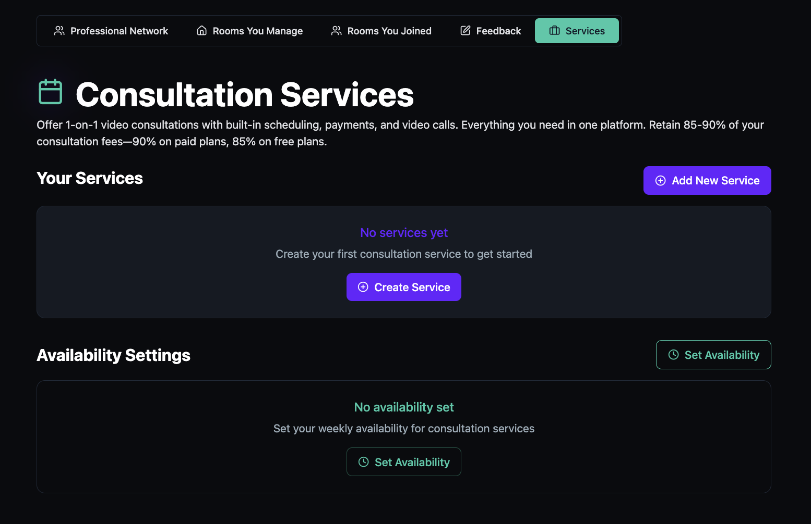
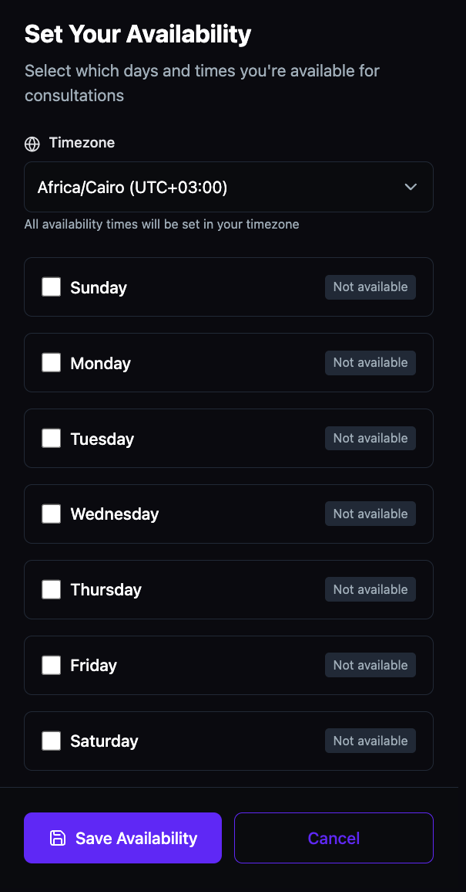
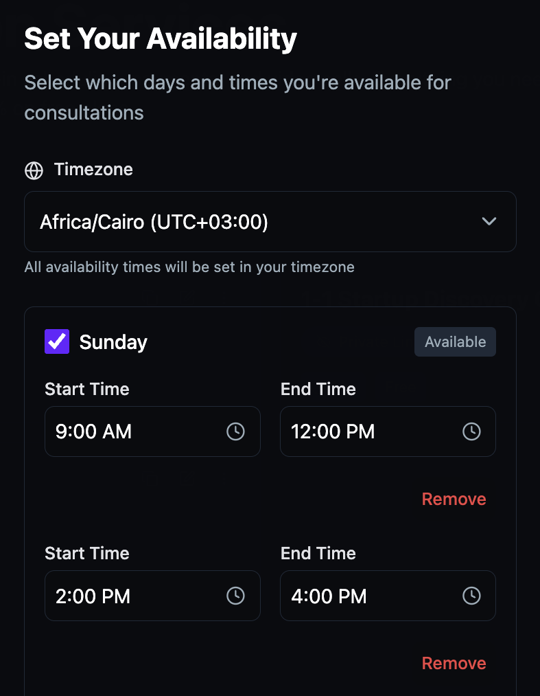
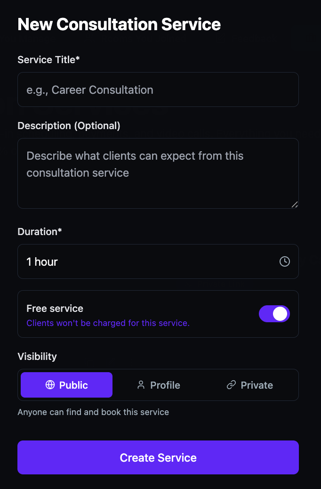
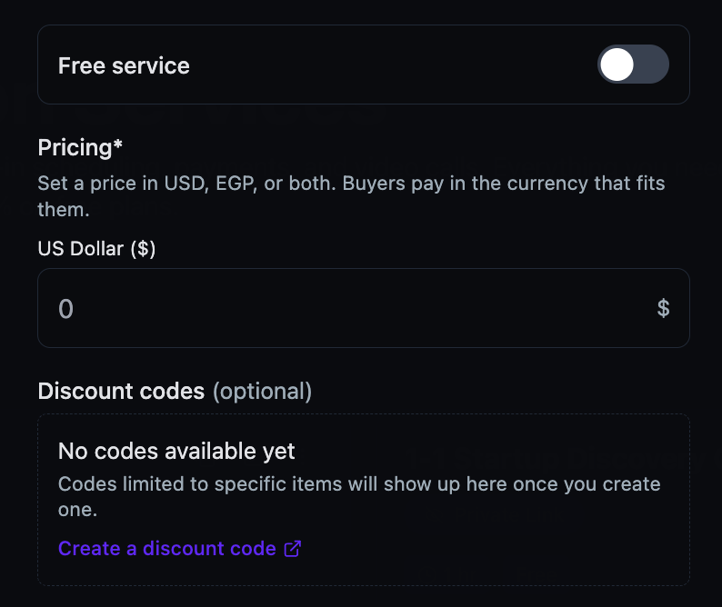
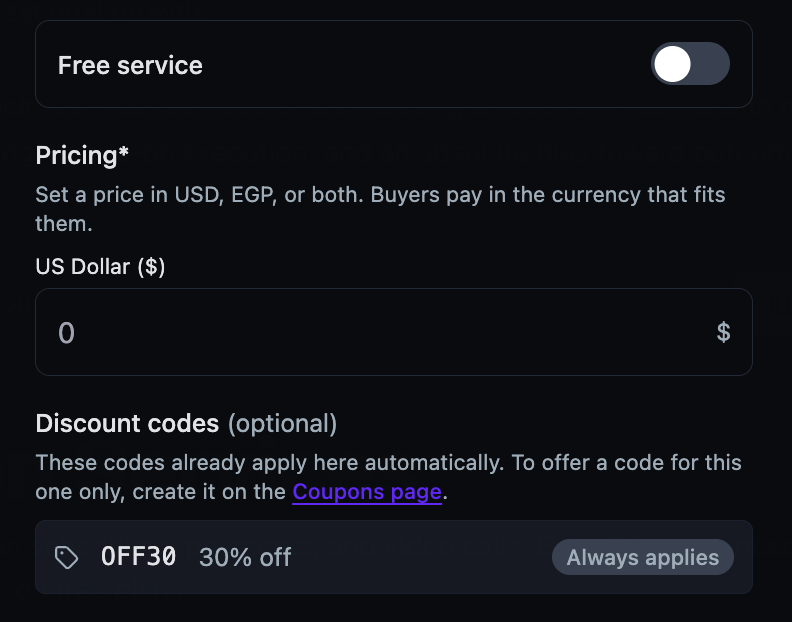

Set up consultation services
Offer 1‑on‑1 video consultations with built‑in scheduling, payments, and video calls. Set your weekly availability, create free or paid services, and control who can discover and book them — the platform handles scheduling and payment collection automatically.
Before you get started
- You need an active BrainsMingle account to offer consultation services.
- You retain 85–90% of your consultation fees — 90% on paid plans, 85% on free plans.
Set your availability
- Click Services in the top navigation bar.
- Under Availability Settings, click Set Availability.

- In the Set Your Availability modal, select your Timezone from the dropdown. All availability times are set in your selected timezone.
- Check the box next to each day you are available. Each day switches from Not available to Available.

- For each available day, set a Start Time and End Time.
- To add multiple time ranges in one day, click + Add another range and set the additional Start Time and End Time. To remove a time range, click Remove.
- Click Save Availability.

Create a consultation service
- Under Your Services, click Add New Service (or click Create Service if you have no services yet).
- In the New Consultation Service modal, enter a Service Title (e.g., Career Consultation).
- Optionally enter a Description that tells clients what to expect from the consultation.
- Select a Duration for the consultation (e.g., 1 hour).
- To offer the service for free, leave the Free service toggle on.

Set up paid consultation
- Toggle Free service off.
- Under Pricing, set a price in USD, EGP, or both. Clients pay in the currency that fits them.

The Discount codes section shows any codes that automatically apply to this service. If no codes exist yet, you can click Create a discount code to set one up on the Coupons page. When a code is active, it appears with its discount percentage and an Always applies badge.

Set visibility
Under Visibility, select who can find and book your service:
- Public — anyone can find and book this service.
- Profile — only visible on your profile page.
- Private — only accessible via direct link.

Click Create Service to publish your consultation.
Share your services
Once your services are live, use the share buttons (X, LinkedIn, or copy link) above your services list to promote them to your audience.